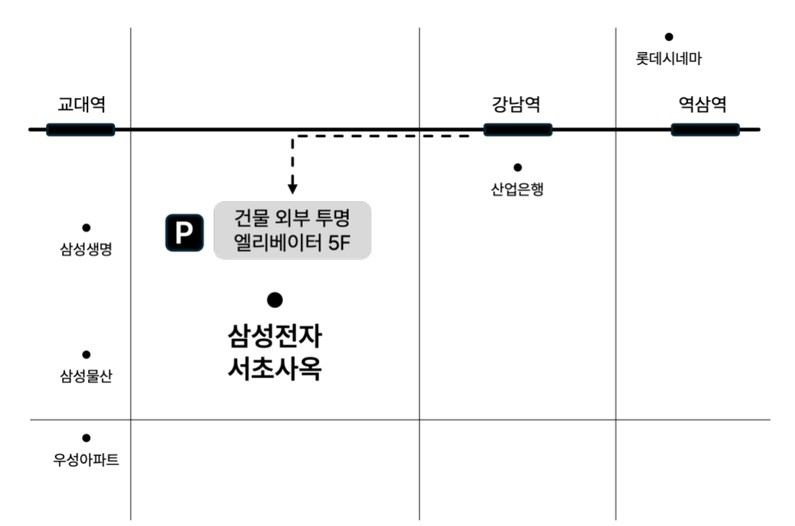

The wedding of
JAEHONG and JINA
2027.04.11 일요일 오전 11:00
삼성전자 서초사옥 웨딩홀
SAVE THE DATE
2027.04.11 일요일 오전 11시
저희 두 사람, 꽃향기 가득한 4월의 봄바람을 타고 부부로서 함께하는 여행을 시작하려 합니다. 한 치 앞도 알 수 없는 삶의 여정에서도 시간과 공간을 넘어 서로를 알아보게 하는 유일한 힘, 사랑으로 한 걸음씩 함께 나아가겠습니다. 저희의 첫걸음에 귀한 걸음으로 함께해 주세요.
이영섭 · 안미정의아들재홍
이진주 · 손희정의딸지나
CONTACT
연락하기
CALENDAR
2027년 4월 11일 일요일 오전 11시
APRIL
일월화수목금토
123
45678910
11121314151617
18192021222324
252627282930
D-DAY
0Days
00Hours
00Min
00Sec
GALLERY
MAP
삼성전자 서초사옥 웨딩홀
서울 서초구 서초대로74길 11 삼성전자빌딩 5F 다목적홀

자가용 이용 시
건물 지하 6,7층 주차장 3시간 무료 이용
지하주차장에서 5층 연결 엘리베이터 탑승
버스 이용 시
강남역 5번출구 정류장 하차 후 도보 6분
9200, 9300, 9404, 140, 340, 서초03
지하철 이용 시
2호선/신분당선 강남역 8번 출구
지하 연결 통로 이용
WITH GRATITUDE
마음 전하실 곳
참석이 어려우신 분들을 위해
조심스럽게 계좌번호를 적어 두었습니다.
너그러운 마음으로 양해 부탁드립니다.
신랑측 계좌번호
신랑 이재홍
신한은행 110-337-445799
신부측 계좌번호
신부 이지나
SC제일은행 573-20-227350
GUESTBOOK
방명록
두 사람에게 축하의 한마디를 남겨주세요.